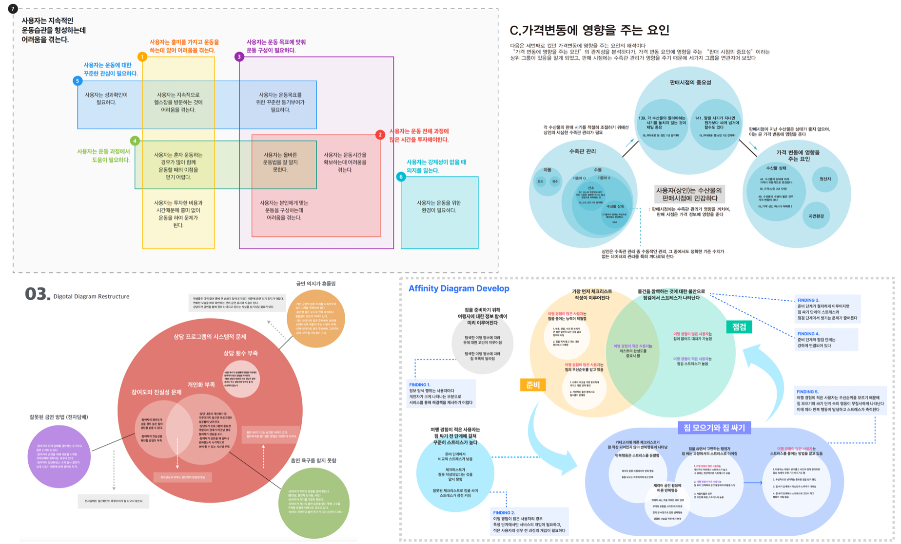

ch3. 디자인 문제의 구조와 KPI(Key Performance Indicator)
데이터 모델과 디자인 문제의 모델링
눈에 보이지 않거나 너무 복잡해서 이해하기 어려운 어떤 현실을 이해하기 위하여 가상의 모형을 만들어낸 것을 모델이라고 합니다. 가까운 예로 지도 같은 것이 현실에서는 한 눈에 보이지도 않고, 복잡한 지형 지물들 때문에 알아보기 힘든 지리 정보를 목적에 맞게 요약해서 보여주는 모델입니다. 그래프도 값의 현황을 잘 이해할 수 있도록 만든 모델이죠. 이런 관점에서 우리가 시각화한 그래프들은 그 자체로 데이터 모델이라고 할 수 있습니다. 통계적 관점으로는 모델이 구현되는 수식으로 정의되기도 합니다. 데이터 분석으로 도출된 각 그래프나 수식들은 데이터에 대한 부분적 시각으로 현실을 상징합니다.
그런데 이 모델들이 서로 관계성을 가지고 연결되고, 여러 관계들을 한 눈에 보일 수 있도록 종합할 수 있다면, 어떤 가치를 갖게 될까요? 이 종합 모델은 데이터 전체를 상징하는 가상 현실 모델이 될 겁니다. 만약 데이터들이 타겟 프로젝트의 디자인 문제들에 관한 것이라면 디자인 문제의 추상적 모델이 구축됩니다. 디자인 문제의 모델이 있다면 우리는 디자인 문제가 왜 발생하고, 어떤 문제들끼리 관련되어 있는지, 어떤 디자인 문제가 가장 근원적인 문제인지를 알 수 있겠죠. 나아가 근원적인 디자인 문제를 특정하고 해결하는 디자인을 생각해낼 수 있게 됩니다. 디자이너들은 이러한 디자인 문제의 모델을 어피니티 다이어그램을 기반으로 구축해왔습니다. 전 단계에서 데이터의 변수와 값을 통하여 여러 디자인 인사이트들을 발견했다면, 이제는 이들을 종합하여 디자인 문제의 모델을 제작합니다.
디자인 문제의 모델은 지금까지 해왔던 것처럼 디자이너의 판단과 사고 과정을 통하여 구축할 수도 있고, 통계적 모델링 방법으로 구축할 수도 있습니다. 디자인 문제의 모델 또한 한 가지의 궁극적인 모델 보다는 여러 목적 별로 구성 시각을 달리하여 구축하는 것이 더 현실적이므로, 기술적 모델링 기법도 쓰고, 인간적 모델링 기법도 사용하여 다양한 모델링 작업을 해보는 것이 좋습니다. 데이터 과학의 방법론으로 디자인 문제를 모델링하는 기술은 디자인 방법론의 연구 관점에서 아직 연구가 더 필요한 영역입니다. 디자인 문제의 모델링 기법에 대하여 앞으로 더 좋은 방법의 연구가 진행되기를 기대하며, 우리의 실습 과제에서는 디자이너들이 기존에 작업해왔던대로 데이터에서 수집한 디자인 인사이트 목록을 사용한 어피니티 다이어그램 제작을 통하여 문제의 구조를 이해합니다. 이제 실습 과제를 통하여 문제의 구조를 도출해보겠습니다.
실습과제 5: 디자인 문제의 구조 도출
디자인 인사이트 목록, 어피니티 그룹핑의 과정과 방법 서술, 완성된 어피니티 다이어그램을 정리하여 문서로 작성합니다.
디자인 인사이트 목록의 완성
앞서의 실습과제 3, 4에서 각 과제의 최종 산출물을 디자인 인사이트의 목록으로 작성하였습니다. 실습과제 3에서 얻은 디자인 인사이트들은 프로젝트의 사용자나 사용 상황, 시장 관련 데이터의 개별 분석에서 나온 사실이나 판단 내용일 것입니다. 또한 실습과제 4의 타겟 서비스를 분석하여 얻은 디자인 인사이트들도 포함되어 있을 것입니다. 이 모든 인사이트들을 하나의 목록으로 모으고, 문장 내용이 중복되지 않게 정리합니다. 어피니티 다이어그램이 의미있는 구조를 갖추어 나오려면 어피니티가 많을 수록 좋고, 적어도 100여개 이상의 인사이트들을 수집하는 것이 좋습니다.
1, 2차 어피니티 그룹핑과 AI 서비스의 사용
어피니티(affinity)는 요소들 상호 간의 강한 연관성이나 끌림을 의미하는 용어입니다. 즉 어티니티 다이어그램은 어피니티의 대상인 인사이트들을 연관성이 높은 것끼리 묶어 의미의 관계를 만들어내는 작업입니다. 이론적으로는 하나 하나의 인사이트 문장들을 서로 비교하여 구축을 해나가야 하지만 많은 수 의 어피니티를 1:1로 비교하는 것은 시간과 노력이 많이 들게 되므로, 우선 1차적으로 내용의 유사성을 가진 인사이트들을 10~20개의 소그룹으로 그룹핑하고, 이 소그룹들을 다시 2차 그룹핑을 실시하여 5~10개의 중그룹을 만듭니다.
어피니티 그룹핑 과정은 생성형 인공지능 서비스를 사용하여 인사이트 문장들을 재구성하면 편리합니다. 생성형 인공지능 서비스에서 1, 2차 그룹핑을 실시하고 각 소그룹과 중그룹을 요약하는 문장을 생성하게 합니다. 각 그룹의 요약 문장은 해당 그룹의 인사이트를 대표하는 역할을 하며, 문제의 구조를 이해하는 중요한 요소가 됩니다. 요약 문장의 주어를 사용자나 사용 상황이 되도록 하여 사용자 경험에 대한 주요 서술을하면, 향후 사용자 경험의 문제 체계를 이해하기 좋습니다. 이 과정에서 중요한 점은 그룹핑의 체계나 각 그룹의 주제를 미리 정해 두는 것이 아니라, 그룹핑을 실시한 뒤 구조를 발견하고, 그룹 내용 요약을 한다는 점입니다. 어피니티를 구축하는 목적이 우리가 몰랐던 문제의 구조를 발견해내는 것이므로 미리 틀을 짜놓고 맞춰가면 안됩니다. 특히 디자인의 구성 요소나 서비스 기능 요소 별로 그룹핑을 하면 안됩니다. 사용자 경험의 문제는 통합적인 것이라서 단위 디자인 구현 요소를 개별적으로 개선하려고 하면, 근원적인 문제 해결을 하기 어렵습니다.
그리고 인공지능이 생성한 그룹핑 내용이 적절한지 반드시 검수하고, 1차에서 적절하지 않은 부분들은 수정한 뒤, 수정된 내용으로 2차 그룹핑 작업을 하기 바랍니다. 2차 그룹핑도 내용을 검수하여 적절한 수정을 한 뒤, 그룹핑의 요약문을 작성하게 합니다. AI 서비스들마다 작업 성능이 다르므로, 여러 AI 서비스에 같은 작업을 시켜보고, 작업 결과의 장단점을 판단하여 종합적으로 작업을 진행하는 것이 좋습니다.
시각화 다이어그램 구성
완성된 그룹핑 구조와 그룹의 요약문을 가지고 시각적인 다이어그램을 구성합니다. 다이어그램은 기본적으로 2차의 포함 관계를 가진 인사이트 그룹들의 트리구조 레이아웃 모델이겠지만, 주제에 따라 트리 구조가 아닌, 시간 흐름이나 순차적 단계가 보이는 레이아웃이 될 수도 있고, 서로 관련 없이 독립적인 여러 개의 구조가 만들어질 수도 있습니다. 그러므로 각 그룹의 요약문을 보고 그룹간의 거리와 위치, 포함 관계를 판단하여 그룹들의 관계가 가장 잘 표현되는 그래픽 구성과 레이아웃을 적용합니다. 그리고 다이어그램은 구성하는 시각에 따라서도 여러 모양의 구조가 나올 수 있으니, 다양한 시각으로 다이어그램 구성 시도를 해보고, 주요 문제 그룹의 구성, 문제 그룹간 연계 관계, 가장 중요한 문제들을 이해하기 좋은 구조를 선택하기 바랍니다.

[그림 23] 어피니티 다이어그램의 구성 예시들
문제의 구조와 핵심성과지표(KPI, Key Performance Indicator)의 연계
실습과제 5에서 제작한 어피니티 다이어그램을 보면 다른 그룹과의 연결 부분이 많거나 포함된 문제 그룹이 많은 어피니티 그룹들을 발견할 수 있을 것입니다. 이렇게 문제 구조에서 중심을 차지하는 그룹을 주요 문제 그룹이라고 부르고, 그 그룹의 요약문이 사용자 경험의 주요 문제가 됩니다. 우리는 문제의 구조에서 근원적이고, 상위 개념에 있는 사용자 경험을 우선적으로 개선할 것이며, 이 개선 목표를 정량적으로 표현한 값을 KPI (Key Performance Indicator)라고 합니다.
KPI는 조직의 목표 달성 정도를 측정하기 위한 핵심 성과 지표를 의미하는 용어로, 조직의 성과를 객관적으로 평가하고 향후 개선 방향을 제시하는 데 사용됩니다. 우리의 목표는 사용자 경험의 개선이므로 주요 사용자 경험이 개선되었는지를 확인할 수 있는 정량적인 값이 KPI가 됩니다. 운영중인 디지털 서비스의 경우 사용자 참여도(일일 활성 사용자 수, 월간 활성 사용자 수 등), 단위 기간 당 사용자 유지율, 가입 전환율, 구매 전환율, 사용자 만족도, 신규 사용자 수 등을 일반적인 KPI로 사용합니다. 예시와 같이 KPI는 인원수, 비율, 만족도 점수 등 측정 가능한 숫자 데이터로 설정합니다.
실습과제 6: 주요 사용자 경험의 문제로 부터 KPI 도출하기
우리가 실습하는 A/B 테스트 방법과의 연계성을 고려하여 다음 사항들을 반영하여 3~5가지의 KPI를 설정합니다.
어피니티 다이어그램을 통하여 가장 중요한 문제 그룹 2-3가지를 선정합니다. 모든 사용자 경험의 문제를 다 해결할 수는 없으므로, 디자인을 통하여 서비스의 사용자 경험에 가장 큰 변화를 가져올 수 있는 문제를 선정하는 것이 좋습니다. 이 때 주요 문제 그룹들이 꼭 같은 수준이나 규모가 아니어도 됩니다. 그리고 UI 문제, 경로 문제, 레이블 문제 등 앱 구성 요소 수준의 문제는 사용자 경험의 근원적인 문제가 아니라, 표면적인 문제이므로 주요 문제에서 제외합니다.
어피니티 다이어그램에서 선정한 주요 문제에 대한 KPI를 도출합니다. KPI는 정량 측정 가능한 지표이며, 한 문제 그룹 당 여러 개의 KPI가 있을 수도 있습니다. 우리는 어피니티 다이어그램의 문제 구조를 보고 KPI를 정하지만, 실무에서는 개선 요청이 있는 주요 서비스들을 KPI로 지정합니다. KPI를 정할 때는 측정할 데이터가 어떤 형식의 정량 데이터이며, 어떻게 수집할지를 함께 고려해야합니다.
일반적으로 실제 서비스의 사용 데이터 수집이 가능한 경우(사용자 로그 데이터가 있는 경우)의 KPI는 수집 가능한 데이터 중에 KPI를 선정하거나 수집된 데이터로 계산할 수 있으면 되지만, 우리 실습과제는 가상 프로젝트의 특성상 사용자의 실사용 로그 데이터 수집이 불가능하므로, 사용자 설문 형식으로 수집하고, 측정 가능한 KPI를 설정해야합니다. 그래서 설문 형식으로 측정 가능한 항목은 주로 사용자의 이해 정도나 사용 의도, 만족도 등 이므로, 실제 비즈니스의 KPI와는 차이가 있습니다. 예를들어 지난 실습 과제에서는 뉴스 앱 서비스의 KPI로 뉴스 읽기 경험의 몰입도, 관심 뉴스 선택 방법의 만족도, 뉴스 콘텐츠의 시각적 만족도를 설정하였고, 부동산 상권 정보 앱 서비스의 KPI로 상권 분석 데이터의 유용성, 매물 검색 필터의 설정 만족도, 매물 비교 페이지의 효율성 등을 설정한 사례가 있습니다.
생성형 AI 서비스를 활용하여 주요 디자인 문제를 설명해주고, 이에 대한 KPI를 추천받아 검토해보는 것도 좋은 방법입니다. 다만 우리 실습에서 KPI를 설문으로 검증해야하므로, 설문으로 측정이 가능한 지표이어야 함을 반영하여 추천하도록 합니다. 물론 추가적으로 실무에서는 어떻게 KPI를 설정할지를 예측해 볼 수 있도록 타겟 서비스의 KPI를 추천하고, KPI 측정 및 검증 방법을 구체적으로 제시하게 하여 비교해보는 것도 좋은 경험이 될 것입니다.